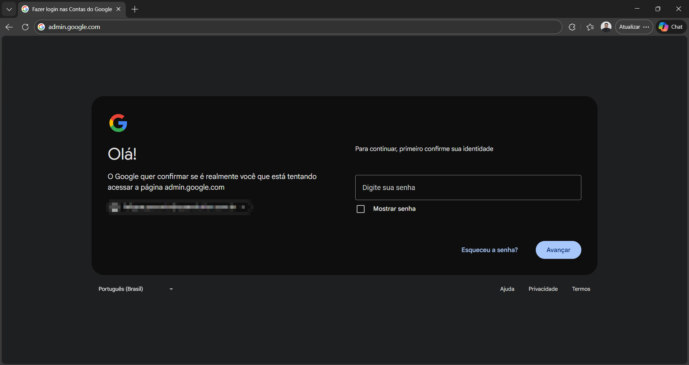
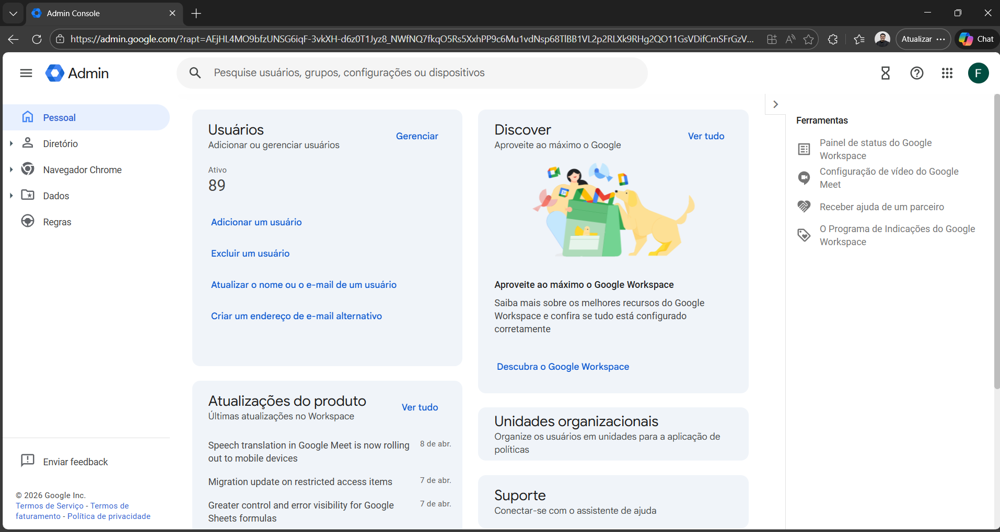
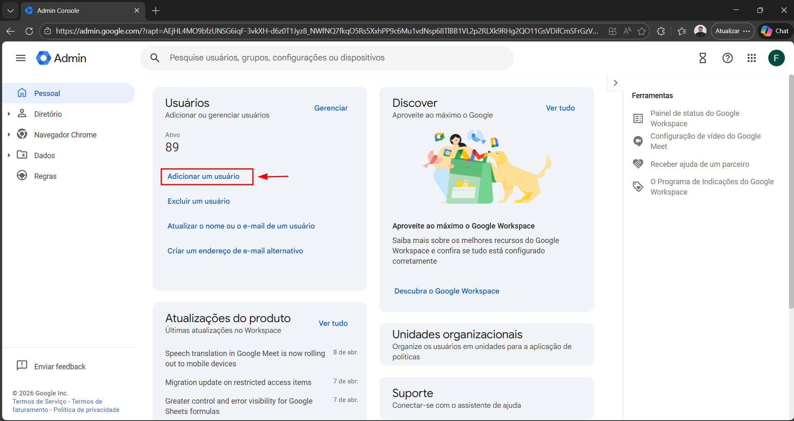
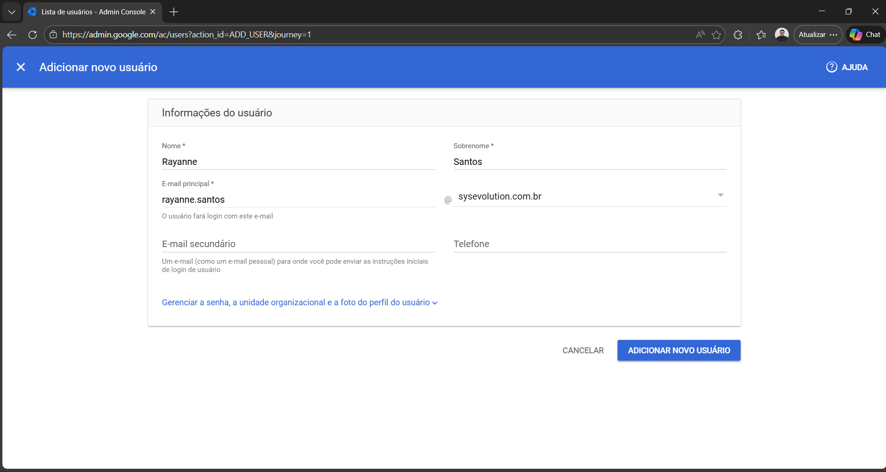
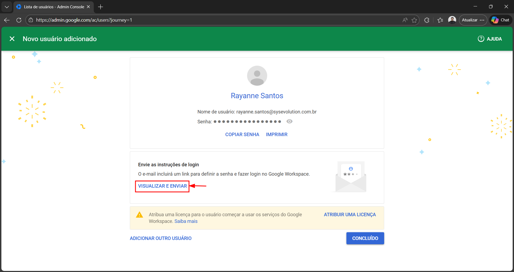
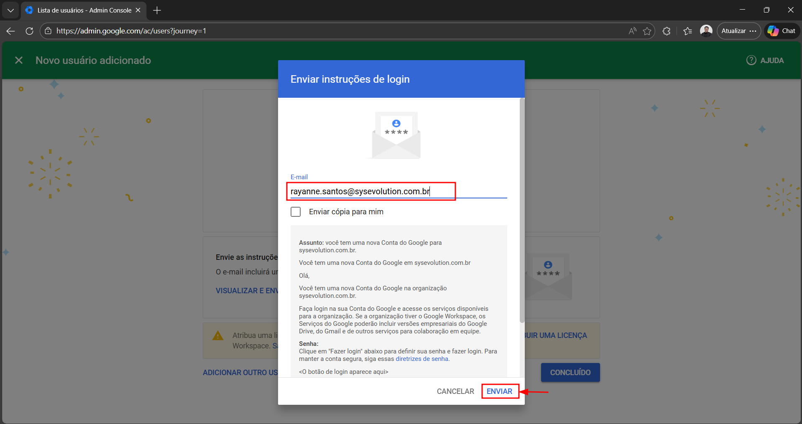
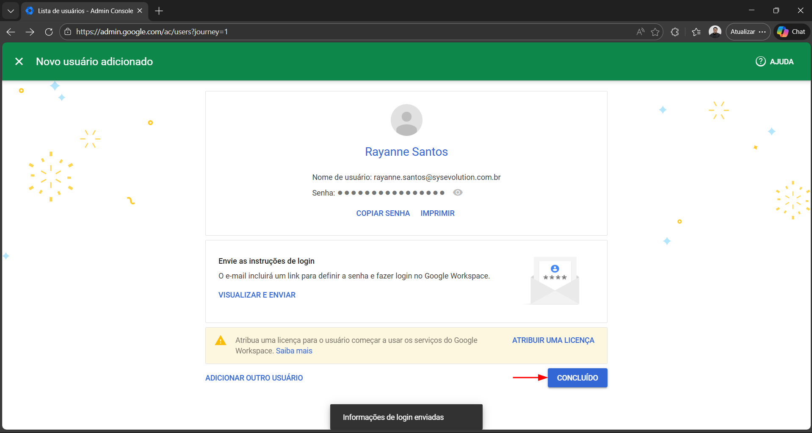

Como criar uma conta corporativa Google
Guia interno para agentes do Service Desk — criação de usuários no Google Workspace.
Este guia detalha os passos para criar uma conta corporativa Google através do Google Admin Console. Ao final do processo, as informações de login serão enviadas automaticamente para o e-mail corporativo do colaborador.
Acessar o Google Admin Console
Em seu navegador, acesse o endereço abaixo e faça login com sua conta de administrador.

Adicionar um novo usuário
Dentro do Admin Console, clique em "Adicionar um usuário" para iniciar o cadastro.


Preencher as informações do usuário
Insira as informações de login do novo usuário, utilizando o mesmo e-mail que o colaborador possui na Microsoft. Preencha nome, sobrenome e o endereço de e-mail conforme a imagem.
Feito isso, clique em "Adicionar novo usuário".

Enviar as informações de login
A tela de "Novo usuário adicionado" será exibida. Clique em "Visualizar e Enviar" para encaminhar as credenciais ao colaborador.

Inserir o e-mail de destino
Insira o e-mail corporativo do colaborador (Microsoft) para que ele receba as informações de login da conta Google. Em seguida, clique em "Enviar".

Confirmar o envio
A mensagem "Informações de login enviadas" será exibida. Clique em "Concluído" para finalizar.

Pronto!
A conta Google corporativa foi criada e as informações de login foram encaminhadas para o e-mail do colaborador.
📋 Observações
Em caso de dúvidas ou problemas durante o processo, entre em contato
com a equipe de Service Desk nos canais:


Também estamos disponíveis no Microsoft Teams.